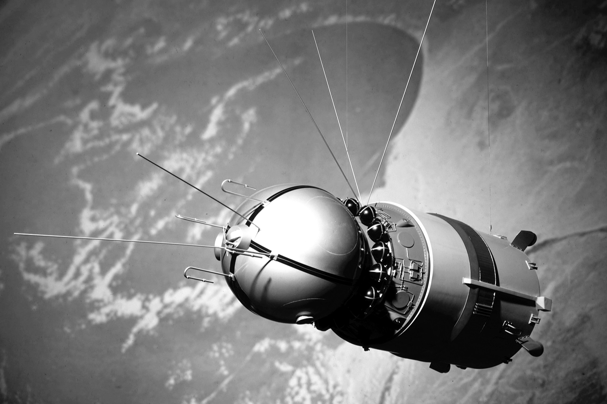

- Дата: полёт начался в 9:07 по московскому времени 12 апреля 1961 года с космодрома Байконур.
- Корабль: Гагарин находился на борту космического корабля «Восток-1», который был запущен с помощью ракеты-носителя «Восток».
- Длительность: весь полёт, включая старт и посадку, занял 1 час 48 минут.
- Маршрут: корабль совершил один виток вокруг Земли.
- Посадка: Гагарин успешно приземлился в Саратовской области, неподалеку от деревни Смеловка.
- Значение: этот полёт открыл эру пилотируемой космонавтики и стал одним из величайших достижений советской и мировой науки.
- Фан факт: я все это списал с ИИ в Гугле
- Подарок: я куплю вам что-нибудь в буфете
